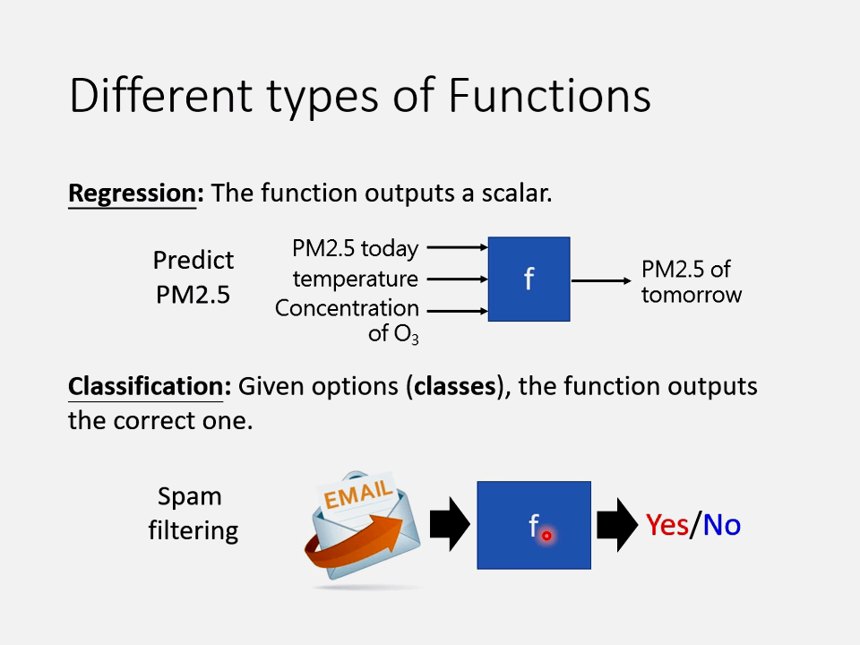
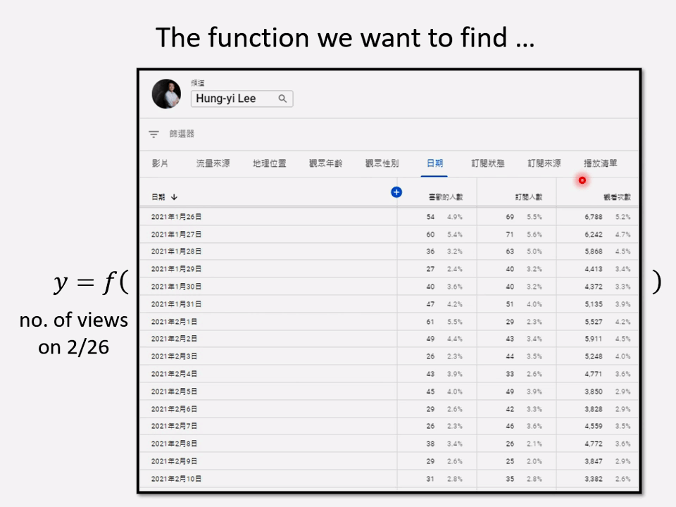
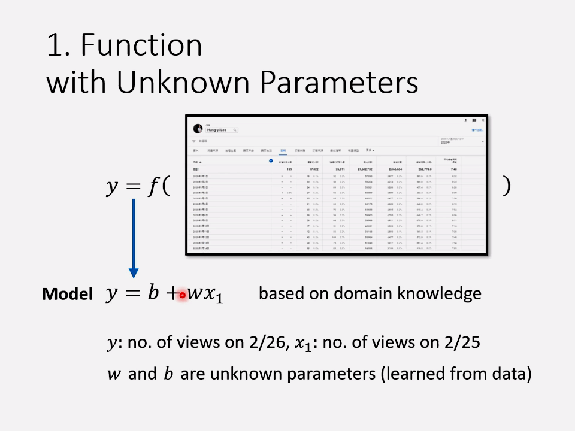

Preparation
【機器學習 2021】預測本頻道觀看人數 -上- - 機器學習基本概念簡介
什么是机器学习

Machine Learning ≈ Look for Function 让机器具备找函数的能力
- Speech Recognition 语音辨识
- Image Recognition 图像识别
- Playing Go 下围棋
机器学习的各个领域
{kind=link}

- Regression 回归，如接受今日 PM 2.5，气温和臭氧含量作为参数，以明日 PM2.5 作为输出
- The function outputs a scalar. 该函数输出一个标量。
- Classification 分类，如判断收到的邮件是否为垃圾邮件。
- Given options (classes), the function outputsthe correct one. 给出选项（类），该函数输出正确的选项。

如下围棋就是一个分类问题，将围棋的每个坐标当作一个类来看。

回归和分类只是机器学习中的一小部分，还有结构化学习 Structured Learning，输入和输出都是具有结构化的对象（数列、列表、树、边界框等）。
举例：预测本频道观看人数
{kind=link}

找到一个函数用于描述某天本频道观看人数。
1.Function with Unknown Parameters
{kind=link}

我们假设某天本频道观看人数 与其前一天本频道观看人数 有关，且满足关系式 。
参数 和 都是未知的，要从数据中学习得出。
2.Define Loss from Training Data

损失函数 是一个含有参数 和 的函数，用于衡量参数 和 的取值有多好。
表示预测值， 表示实际值， 表示误差
- 如果 ，则 为平均绝对值误差（MAE）
- 如果 ，则 为均方误差（MSE）
如果 和 都是概率分布，则用交叉熵损失函数（Cross-entropy）
3.Optimization
找到使 值最小时 和 的取值。

先考虑只有参数 的情况：
使用梯度下降方法：
-（随机）挑选一个初始值
-
计算 对 的导数
-
迭代更新 ，
- 其中 被称为学习率（learning rate），这是由用户自行设定的。
- 由用户自行设定的参数被称为超参数（hypermeters）
- 其中 被称为学习率（learning rate），这是由用户自行设定的。
梯度下降方法只能找到 的极小值（local minima）而不是最小值（global minima），但这不是梯度下降方法最大的问题。
为什么不采用暴力搜索的方法查找最小值？如果参数过多，暴力搜索的方法就无法实现了，只能采用梯度下降方法。

对于多个参数 和 ，原理相同。
至于求导，可以由深度学习框架自行解决。
何时停止迭代？当算得的梯度为 0 或者人为终止迭代。
\frac{\partial L}{\partial w} \\ \frac{\partial L}{\partial b} \end{bmatrix}_{\mathrm{gradient}}$$ 因而得名梯度下降。  随着迭代次数增加，$L$ 值逐渐减小。 在这个示意图中，红色表示 $L$ 值较大，蓝色表示 $L$ 值较小。 #### 总结  最后的训练好的模型中 $w^*=0.97$，$b^*=0.1k。$对于训练集（2017-2020 中各天本频道观看人数）：$L(w^*, b^*)=0.48k$。 而对于训练时未用到的数据（2021 中各天本频道观看人数），$L'=0.58k$。  训练好的模型只是简单地认为当日的本频道观看人数与前一日本频道观看人数有关，而从实际情况可以看出，本频道观看人数似乎有一定的周期性，如一周的周末中本频道观看人数较少。  调整模型，如 $y=b+\sum^7_{j=1}w_jx_j$，就考虑本频道观看人数情况与前一周的本频道观看人数情况有关，此时 $L$ 和 $L'$ 都有所下降。 若 $y=b+\sum^{28}_{j=1}w_jx_j$，则 $L$ 和 $L'$ 又有所下降。 而当 $y=b+\sum^{56}_{j=1}w_jx_j$ 时，$L$ 和 $L'$ 不再下降，说明再扩大天数并不能更好地优化模型了。 ## 【機器學習 2021】預測本頻道觀看人數 -下- - 深度學習基本概念簡介 ### 1.Function with Unknown Parameters  也许**线性模型（Linear models）**太过简单，我们需要更复杂的模型。如图所示，如果真实模型像红色折线的那样，则你无论怎么训练线性模型，都无法很好地拟合真实情况。 **Model Bias** 一般是由于模型设计太过简单，此时再进行训练也无法找到更好的参数来使 $L$ 降低。  我们可以将这个红色折线由一个常数和若干个 Hard Sigmoid 函数之和来表示：$y=b+\sum_ic_i\mathrm{sigmoid}(b_i+w_ix_1)$。  任何折线都可以用这种形式来表示，只要 Hard Sigmoid 函数管够就行。 Sigmoid 函数的个数？由用户自行设定，这也是一个 hypermeters。  用片状线性曲线近似连续曲线。为了有好的近似，我们需要足够的片断。  一般用 Soft Sigmoid 函数（往往称为 Sigmoid 函数）去逼近这个 Hard Sigmoid 函数。 **Sigmoid 函数**：$y=c\frac{1}{1+e^{-(b+wx_1)}}=c\mathrm{sigmoid}(b+wx_1)$  - 不同的 $w$ 会修改 Sigmoid 函数的坡度 - 不同的 $b$ 会平移 Sigmoid 函数 - 不同的 $c$ 会修改 Simoid 函数的高度  这样我们就得到了一个具有更多特征的新的回归模型：$y=b+\sum_ic_i\mathrm{sigmoid}\left(b_i+\sum_jw_ijx_j\right)$  - $i$ 表示 Sigmoid 函数的序号 - $j$ 表示特征的序号 - $w_{ij}$ 表示第 $i$ 个 Sigmoid 函数第 $x_j$ 的权重  再通过激活函数和相加后得到最后的回归模型 $y$。  这个表达式可以用向量乘法简单表示。  将所有参数拉长变成一个向量 $\theta$。 ### 2.Define Loss from Training Data 损失函数 $L$ 与之前没有什么变化，但是由于参数变多，用 $L(\theta)$ 表示。  ### 3.Optimization   现在问题变为 $\mathbf{\theta}^*=arg\min_\theta L$，方法与之前类似，只不过参数变多了。 用 $\mathbf{g}$ 对各个参数的导数总和作简写。  由于参数量过多，要把数据集分成多个 **batch** 来更新参数 $\mathbf{\theta}^*$。一次计算完所有数据集的迭代过程称为 **epoch**。  举例： - 如果有 10000 个数据，Batch 的大小为 10，则一次 epoch 需要更新 1000 次参数。 - 如果有 1000 个数据，Batch 的大小为 100，则一次 epoch 需要更新 10 次参数。 Batch 的大小也是一个 hypermeters。  也可以用两个 ReLU 叠加起来来代替 Sigmoid 函数来逼近 Hard Sigmoid 函数。  我们把这种函数称之为**激活函数**，一般来说 ReLU 会比 Sigmoid 效果更好些。  我们用多个 ReLU 来逼近最终的回归曲线，可以看到随着 ReLU 的个数增多，$L$ 的值有所下降。  我们也可以进行多次这种计算，形成**深度神经网络**。  3 层神经网络的预测结果，由于模型中并没有考虑春节的因素，在春节前后误差较大。  给所接触到的东西作一个统一的命名。  随着时代的发展，神经网络的层数越来越多，准确率越来越好。 Residual Net 并不是简单的 Fully Connected Network，使用了 Special structure，不然很可能会过拟合。 - [为什么是深度神经网络而不是宽度神经网络？增加神经网络的深度相比于增加宽度有哪些优点？_KeEN 丶 X 的博客-CSDN 博客_神经网络宽度为什么不能太宽](https://blog.csdn.net/KeEN_Xwh/article/details/113478160)  神经网络的层数并不是越多越好，过多的层数可能会出现过拟合的现象。 # Class Material ## 【機器學習 2022】開學囉- 又要週更了- ### 机器学习课程速览 This course focuses on **Deep Learning**.  在机器学习中，输入的数据可以是**向量**、**矩阵**（如图像）、**序列**（如语音，文本），输出的数据可以是**标量**（回归）、**类别**（分类）、文本、图像等。 ### 教机器的种种方法 - HW1：COVID-19 Case Prediction 新冠感染人数预测 - 输入向量、输出标量 - HW2：Phoneme Classification 因素分类 - 输入向量、输出类别 - HW3：Image Classification 图像分类 - 输入矩阵、输出类别 - HW4：Speaker Classification 说话者分类 - 输入序列、输出类别 - HW5：Machine Translation 机器翻译 - 输入序列、输出文本 - HW6：动漫脸谱生成 #### Lecture 1 - 5 有监督学习  课程 1-5 属于有监督学习，以给一张图片，让机器分类是宝可梦还是数码宝贝为例，训练集需要有对应的标签。 #### Lecture 7 自监督学习  要在深度神经网络中应用监督学习，我们需要足够的标记数据。但是人工手动标记数据既耗时又昂贵。对于一些特殊的领域，比如医学领域获取足够的数据本身就是一个挑战。因此，监督学习当前的主要瓶颈是标签生成和标注。 **自监督学习**是通过以下方式将**无监督问题**转化为**有监督问题**的方法。  **预训练模型 Pre-trained Model（基础模型 Foundation Model）** 之于 **下游模型 Downstream Tasks** 相当于 操作系统 之于 应用。 - [什么是大模型？超大模型和 Foundation Model 呢？- 知乎 (zhihu.com)](https://www.zhihu.com/question/498275802) AI 专家将大模型统一命名为 Foundation Models，可以翻译为基础模型或者是基石模型。 #### Lecture 6 GAN  GAN：是训练集的输入 $x$ 和输出 $y$ 不必配对地出现。  常见领域： - 无监督的抽象性归纳 - https://arxiv.org/abs/1810.02851 - 无监督翻译 - https://arxiv.org/abs/1710.04087 - https://arxiv.org/abs/1710.11041 - 无监督的自动语音识别 - https://arxiv.org/abs/1804.00316 - https://arxiv.org/abs/1812.09323 - https://arxivorg/abs/1904.04100 - https://arxiv.org/abs/2105.11084 #### Lecture 12 强化学习  在人也不能确定最优解时——强化学习 ### 进阶课题——不只是追求正确率 #### Lecture 8 异常检测  让机器在能识别这个图像是宝可梦还是神奇宝贝的同时，还能识别异常图片，返回”I don't know“。 #### Lecture 9 Explainable AI  让机器知其然还要知其所以然。  举例，在机器判别图片是宝可梦还是神奇宝贝的过程中，将其判别的主要依据用特定的记号标记，然而判别的主要依据不在生物本身上？  最后发现原因：宝可梦的所有图片都是 PNG 格式，而大多数数码宝贝的图片是 JPEG 格式。机器根据背景颜色区分宝可梦和数码宝贝。 #### Lecture 10 Model Attack  往图片中一定的噪音，可能会出现截然不同的判别结果。 攻防问题 - 攻：通过加入某些噪音破坏判别结果 - 防：防止某些噪音破坏判别结果 #### Lecture 11 领域适应性  在黑白图像中训练好的模型，在黑白图像里测试准确率好，但在彩色图像中准确率差。 #### Lecture 神经网络压缩  在资源受限的环境中部署 ML 模型。 #### Lecture 14Life-long Learning  Life-long Learning 的目标，让机器能解决各种问题。 ### 学习如何学习 #### Lecture 15 元学习  少量的学习通常是通过元学习实现的。让机器自己找到一个机器学习的算法。 ## ML 2022 PyTorch Tutorial 1 ### 安装 pytorch 按照官方的方法是从官网 [PyTorch](https://pytorch.org/) 安装 pytorch 环境，但这在国内下载真的好慢……  鼓捣了老半天觉得用离线安装的方式比较好 orz 从镜像站 https://download.pytorch.org/whl/torch_stable.html 下载对应版本的`torch`和`torchvision` 下载了 [cu117/torch-1.13.1%2Bcu117-cp39-cp39-win_amd64.whl ](https://download.pytorch.org/whl/cu117/torch-1.13.1%2Bcu117-cp39-cp39-win_amd64.whl)和 [cu117/torchvision-0.14.1%2Bcu117-cp39-cp39-win_amd64.whl](https://download.pytorch.org/whl/cu117/torchvision-0.14.1%2Bcu117-cp39-cp39-win_amd64.whl) 在下载到的目录进入 cmd 使用`pip install torch-l.13.1+cul17-cp39-cp39-win amd64.whl`和`pip install torchvision-0.14.1+cu117-cp39-cp39-win amd64.whl`安装。 在 python 中验证： ```python import torch print(torch.__version__) print(torch.cuda.is_available()) # cuda 显卡是否可以使用 ``` ``` 1.13.1+cu117 True ``` ### Training Neural Networks 训练神经网络的步骤： - 定义神经网络结构，定义损失函数，定义优化算法 - 训练 ### Training & Testing Neural Networks 在训练模型中使用训练集 Training 和 验证集 Validation，测试模型时使用 Testing。 ### Training & Testing Neural Networks - in Pytorch #### Step 1.torch.utils.data.Dataset & torch.utils.data.DataLoader ##### Dataset & Dataloader DataSet: 存储数据样本 $x$ 和预期值 $y$ Dataloader: 对数据进行分批分组 groups data in batches，实现多任务处理 ```python dataset = MyData(file) dataloader = DataLoader(dataset, batch_size, shuffle=True) ``` [机器学习，深度学习模型训练阶段的 Shuffle 重要么？为什么？_技术宅 zch 的博客-CSDN 博客_深度学习 shuffle](https://blog.csdn.net/qq_19672707/article/details/88864207) - 对于 Training 和 Validation，需要打乱，`shuffle=True` - 对于 Testing，不需要打乱，`shuffle=False` 如下列代码就将数据集分成 5 给 batch： ```python dataset = MyDataset(file) dataloader = DataLoader(dataset, batch_size=5, shuffle=False) ```  设计一个 `MyDataset` 类用于管理数据集： ```python from torch.utils.data import Dataset, DataLoader class MyDataset(Dataset): def __init__(self, file): """读取数据并初始化""" self.data = ... def __getitem__(self, index): """返回一个数据""" return self.data[index] def __len__(self): """返回数据集的大小""" return len(self.data) ``` ##### Tensors pytorch 中的 Tensors 就是高维数组，相当于 numpy 中的 array dim in PyTorch == axis in NumPy ###### 创建 tensor - 直接填入数据，list 或 numpy.ndarray ```python x = torch.tensor([[1, -1], [-1, 1]]) ``` ```python x = torch.from_numpy(np.array([[1, -1], [-1, 1]])) ``` - 输入形状，填入 0 或 1 ```python x = torch.zeros([2, 2]) ``` ```python x = torch.ones([1, 2, 5]) ``` ###### 常见运算符 - 加法 ```python z = x + y ``` - 减法 ```python z = x - y ``` - 乘方 ```python y = x.pow(2) ``` - 求和 ```python y = x.sum() ``` - 均值 ```python y = x.mean() ``` - 转置 ```python x = x.transpose(0, 1) ``` - Squeeze 移出某个维度  - Unsqueeze 添加某个维度  - Cat 拼接数组  ###### PyTorch v.s. Numpy 数据类型： | Data type | dtype | tensor | | ----------------------- | ----------- | ----------------- | | 32-bit floating point | torch.float | torch.FloatTensor | | 64-bit integer (signed) | torch.long | torch.LongTensor | | PyTorch | Numpy | | ------------------ | -------------------- | | x.shape | x.shape | | x.dtype | x.dtype | | x.reshape / x.view | x.reshape | | x.squeeze() | x.squeeze() | | x.unsqueeze(1) | np.expand_dims(x, 1) | ##### Device 自行选择 CPU 或 Cuda 对 Tensors 进行运算。 CPU ```python x = x.to(‘cpu’) ``` GPU ```python x = x.to(‘cuda’) ``` ###### 计算梯度 定义 $x$，并事先告知需要计算梯度 `requires_grad=True`。 $$x=\begin{bmatrix}1 & 0 \\ -1 & 1\end{bmatrix}$$ ```python x = torch.tensor([[1., 0.], [-1., 1.]], requires_grad=True) ``` $$z=\sum_i\sum_j x^2_{i,j}$$ ```python z = x.pow(2).sum() ``` 求导 $$\frac{\partial z}{\partial x_{i,j}}=2x_{i,j}$$ ```python z.backward() ``` 得到 $x$ 的梯度 $$\frac{\partial z}{\partial x}=\begin{bmatrix}2&0\\-2&2\end{bmatrix}$$ ```python x.grad ``` ``` tensor([[ 2., 0.], [-2., 2.]]) ``` #### Step 2.torch.nn.Module - 全连接层 ```python layer = torch.nn.Linear(32, 64) ``` - 激活函数 ```python nn.Sigmoid() nn.ReLU() ``` 将定义的神经网络模型放在`MyModel`类中： ```python import torch.nn as nn class MyModel(nn.Module): def __init__(self): """初始化你的模型，定义神经网络层""" super(MyModel, self).__init__() self.net = nn.Sequential( nn.Linear(10, 32), nn.Sigmoid(), nn.Linear(32, 1) ) def forward(self, x): """计算你的 NN 的输出""" return self.net(x) ``` 可以不使用`nn.Sequential`，效果与下面的代码作用一致 ```python import torch.nn as nn class MyModel(nn.Module): def __init__(self): super(MyModel, self).__init__() self.layer1 = nn.Linear(10, 32) self.layer2 = nn.Sigmoid(), self.layer3 = nn.Linear(32,1) def forward(self, x): out = self.layer1(x) out = self.layer2(out) out = self.layer3(out) return out ``` #### Step 3.torch.nn.MSELoss torch.nn.CrossEntropyLoss etc. 定义损失函数 - MSE ```python criterion = nn.MSELoss() ``` - 交叉熵损失函数 ```python criterion = nn.CrossEntropyLoss() ``` - 输入预测值和实际值计算 loss ```python loss = criterion(model_output, expected_value) ``` #### Step 4.torch.optim 找到一个函数以减少 loss 的值，如 随机梯度下降法 Stochastic Gradient Descent (SGD) ```python torch.optim.SGD(model.parameters(), lr, momentum = 0) ``` #### Step 5.Entire Procedure ##### Neural Network Training Setup 完整流程：读取数据-分割数据-定义模型-定义损失函数-定义优化函数 ```python dataset = MyDataset(file) tr_set = DataLoader(dataset, 16, shuffle=True) model = MyModel().to(device) criterion = nn.MSELoss() optimizer = torch.optim.SGD(model.parameters(), 0.1) ``` ##### Neural Network Training Loop 训练过程： ```python for epoch in range(n_epochs): # 进行一个 epoch model.train() # 将模型设为 train 模式 for x, y in tr_set: # 从 dataloader 中读入 x, y optimizer.zero_grad() # 将梯度设为 0 x, y = x.to(device), y.to(device) # 将数据放入设备(CPU/Cuda) pred = model(x) # 前向传播(得到输出值) loss = criterion(pred, y) # 计算 loss loss.backward() # 计算梯度(backpropagation) optimizer.step() # 优化参数 ``` ##### Neural Network Validation Loop 上接上面的 epoch 循环： ```python model.eval() # 将模型设为 evaluation 模式 total_loss = 0 # 初始化 loss for x, y in dv_set: # 从 dataloader 中读入 x, y x, y = x.to(device), y.to(device) # 将数据放入设备(CPU/Cuda) with torch.no_grad(): # 禁用梯度计算 pred = model(x) # 计算输出值 pred loss = criterion(pred, y) # 计算 loss total_loss += loss.cpu().item() * len(x) # 将所有 loss 加到一起 avg_loss = total_loss / len(dv_set.dataset) # 计算平均 loss ``` ##### Neural Network Testing Loop ```python model.eval() # 将模型设为 evaluation 模式 preds = [] # 定义一个列表存储预测值 for x in tt_set: # 从 dataloader 中读入 x x = x.to(device) # 将数据放入设备(CPU/Cuda) with torch.no_grad(): # 禁用梯度计算 pred = model(x) # 计算输出值 pred，即预测结果 preds.append(pred.cpu()) # 生成预测结果 ``` ##### Notice - model.eval(), torch.no_grad() - `model.eval()` 改变一些模型层的行为，如 dropout 和 batch normalization。 - `with torch.no_grad()`防止计算结果被添加到梯度计算的图。通常用于防止在验证/测试数据上的意外训练。 ##### 存/读 训练模型 - Save ```python torch.save(model.state_dict(), path) ``` - Load ```python ckpt = torch.load(path) # 保存文件路径 model.load_state_dict(ckpt) # 保存 ckpt 文件 ``` #### More About PyTorch - torchaudio - speech/audio processing - torchtext - natural language processing - torchvision - computer vision - skorch - scikit-learn + pyTorch - Useful github repositories using PyTorch - Huggingface Transformers (transformer models: BERT, GPT, ...) - Fairseq (sequence modeling for NLP & speech) - ESPnet (speech recognition, translation, synthesis, ...) - Most implementations of recent deep learning papers # Extra Material ## Introduction of Deep Learning  Deep Learning 使用次数越来越频繁。  Deep Learning 的历史： - 1958: Perceptron (linear model) 线性感知机 - 1969: Perceptron has limitation 线性感知机有明显的局限性，如不能处理异或问题 - 1980s: Multi-layer perceptron 多层感知机 - Do not have significant difference from DNN today 与当今深度神经网络并无明显差别 - 1986: Backpropagation 反向传播 - Usually more than 3hidden layers is not helpful 多余 3 层的隐藏层并没有明显效果 - 1989: 1hidden layer is "good enough", why deep? 1 层隐藏层即可，为什么要多层？ - 2006: RBM initialization (breakthrough) [受限玻尔兹曼机（RBM）学习 - 知乎 (zhihu.com)](https://zhuanlan.zhihu.com/p/22794772) - 2009: GPU 显卡加速神经网络的训练速度 - 2011: Start to be popular in speech recognition 在语音识别中效果显著 - 2012: win ILSVRC image competition 赢得 ILSVRS 图像识别比赛  Deep Learning 的步骤与传统机器学习方法类似： - Step 1:define a setof function 在 Deep Learning 中为设置神经网络的结构 - Step 2:goodness offunction - Step 3: pickthe bestfunction   在神经网络前向传播的过程中其实就是一系列矩阵运算，因此使用 GPU 速度比 CPU 要更快。  神经网络的隐藏层就相当于传统机器学习方法中 Feature extractor replacingfeature engineering 的过程。 如果是一个分类问题，在输出层要进行 Softmax 操作，输出期望值最高的类别。  对于手写体数字识别，输出的是一个向量，值最高的就是输出的类别。  此时神经网络中的隐藏层就是一个手写体数字识别函数集。你设定一个好的神经网络结构，以拟合出一个好的函数。  Q: 设置神经网络需要多少层？每层需要多少神经元？ A: 需要开发者的不断试错和直觉。 Q: 我们可以让机器来自动设计神经网络吗？ A: 如 [Evolutionary Artificial Neural Networks (researchgate.net)](https://www.researchgate.net/publication/2861461_Evolutionary_Artificial_Neural_Networks#:~:text=Evolutionary artificial neural networks (EANNs) refer to a,(GAs)%2C evolutionary programming (EP)%2C or other evolutionary algorithms.)，但是没有那么通用 Q: 其他形状的神经网络结构？ A: 如卷积神经网络  定义损失函数，由于 $y$ 和 $\hat y$ 都是概率分布，使用**交叉熵损失函数（Cross-entropy）** $$C(y,\hat y)=-\sum^{10}_{i=1}\hat{y_i}\ln y_i$$  最终的损失函数表示为 $L=\sum^N_{n=1}C^n$，目标就是通过调整隐藏层中的参数使 $L$ 取得最小值。  搜索 $L$ 的最小值的方法：梯度下降。 就连 Alpha Go 也使用梯度下降。  反向传播：计算各种微分的有效方式。人工计算微分总是很麻烦，往往使用现成的库。  理论：只要神经元个数够多，总能拟合出任意函数。  其他资源： - My Course: Machine learning and having it deep andstructured - http://speech.ee.ntu.edu.tw/~tlkagk/courses_MLSD15_2.html - 6hour version: http://www.slideshare.net/tw_dsconf/ss-62245351 - "Neural Networks and Deep Learning" - written by Michael Nielsen - http://neuralnetworksanddeeplearning.com/ - "Deep Learning" - written by Yoshua Bengio, lan J. Goodfellow and Aaron Courville - http://www.deeplearningbook.org ## Backpropagation - [笔记 | 什么是 Backpropagation - 知乎 (zhihu.com)](https://zhuanlan.zhihu.com/p/52055526)  **backpropagation 反向传播算法**是在梯度下降算法中计算梯度一种有效率的算法。  链式法则 - Case 1 $y=g(x)\ z=h(y)$ - $\Delta x \rightarrow \Delta y \rightarrow \Delta z$ - 要求 $z$ 对 $x$ 的导数：$\frac{dz}{dx}=\frac{dz}{dy}\frac{dy}{dx}$ - Case 2 $x=g(s)\ y=h(s)\ z=k(x,y)$ - 要求 $z$ 对 $s$ 的导数：$\frac{dz}{ds}=\frac{\partial z}{\partial x}\frac{dx}{ds}+\frac{\partial z}{\partial y}\frac{dy}{ds}$  对于梯度下降方法，需要求 $L$ 对各个神经元 $w$ 的权重： $$L(\theta)=\sum^N_{n=1}C^n(\theta)\rightarrow \frac{\partial L(\theta)}{\partial w}=\sum^N_{n=1}\frac{\partial C^n(\theta)}{\partial w}$$ 要求 $\frac{\partial L(\theta)}{\partial w}$ 就要求 $\frac{\partial C}{\partial w}$。  根据链式法则，$\frac{\partial C}{\partial w}=\frac{\partial z}{\partial w}\frac{\partial C}{\partial z}$ 对于 **Forward pass**，用于计算 $\frac{\partial z}{\partial w}$， 对于 **Backward pass**，用于计算 $\frac{\partial C}{\partial z}$，$z$ 是神经元的输出数据。  对于 Forward pass，如示意图，$z=x_1w_1+x_2w_2+b$，因此$\frac{\partial z}{\partial w_1}=x_1$，$\frac{\partial z}{\partial w_2}=x_2$，值就是输入进来的权重 $w$。   而对于 Backward pass，用于计算 $\frac{\partial C}{\partial z}$根据链式法则，$\frac{\partial C}{\partial z}=\frac{\partial a}{\partial z}\frac{\partial C}{\partial a}=\frac{\partial z'}{\partial a}\frac{\partial C}{\partial z'}+\frac{\partial z''}{\partial a}\frac{\partial C}{\partial z''}$ $z$ 对上一个神经元经过激活函数后的输出 $a$ 很好计算（就是其权重 $w$），难点是交叉熵损失函数 $C$ 对 $z$ 的导数。  此时就要通过神经元后面的数据来计算 $\frac{\partial C}{\partial z}=\sigma'(z)\left[w_3\frac{\partial C}{\partial z'}+w_4\frac{\partial C}{\partial z''}\right]$ 其中 $\sigma'(z)$ 就是激活函数的导数，是一个常数，因为 $z$ 的值已经在 forward pass 中得到。 对于 Sigmoid 函数 $f(x)=\frac{1}{1+e^{-x}}$，其导函数 $f'(x)=f(x)\left[1-f(x)\right]$  如果当前层的下一层是输出层，则可以根据输出的值计算 $\frac{\partial C}{\partial z'}$  如果不是，则要递归地计算下一层的 $\frac{\partial C}{\partial z}$，直到下一层为输出层。   最后总结，通过 Forward Pass 计算得到 $\frac{\partial z}{\partial w}=a$，再通过 Backward Pass 计算得到 $\frac{\partial C}{\partial z}$，两者相乘就得到要求的 $\frac{\partial C}{\partial w}$。 ## Predicting Pokémon CP 这是一个回归问题的案例分析。  **回归 Regression** 可以 - 预测股票 - 输入股票曲线，输出明天的道琼指数 - 自动驾驶 - 输入周边环境，输出操纵方向盘 - 商品推荐 - 输入使用者和商品，输出购买可能性  课程的案例分析是： 已知宝可梦的战力值 $x_{cp}$，类型 $x_s$，体力 $x_{hp}$，重量 $x_w$，身高 $x_h$，尝试推测进化后的宝可梦的 CP（战力）值 $y$ ### Step 1: Model  先假定一个线性模型，进化后的战力值只与当前战力值相关，$y=b+wx_{cp}$。 ### Step 2: Goodness of Function  训练集是 10 个宝可梦的数据，记作 $(x^1,\hat y^1), (x^2, \hat y^2)...(x^10, \hat y^{10})$。  设计损失函数估算误差 Estimation error：$\mathrm{L}(f)=\mathrm{L}(w, b)=\sum^{10}_{n=1}\left(\hat y^n - (b+w\cdot x^n_{cp})\right)$ ### Step 3: Gradient Descent  使用**梯度下降**方法以解决 $w^*=arg\min_wL(w)$  梯度下降只能找到极小值而不能保证找到最小值，在初始参数不同的时候可能会得到不同的结果。 但在线性模型中，这个问题不存在，因为此时极小值就是最小值。  此时得到的训练模型 $b=-188.4, w=2.7$，在训练集中 $L=35.0$，在测试集中 $L=31.9$  考虑将模型换为更复杂的模型，此时 $L$ 值有所下降。 ### Model Selection  选择的模型次数越高，模型在训练集上的 $L$ 值越小，但在测试集值中可能不降反增 $L$，这个现象称之为**过拟合**。 就好比你在驾校练车，练着练着发现了查看某些标记点开车效果更好，但在真实道路上并不能表现得更好。  考虑其他因素对 $y$ 的影响，如宝可梦本身的种族，不同的种族应用不同的线性模型。  引入独热编码，此时模型变为 $y=b+\sum w_ix_i$。  此法再次有效地降低了 $L$。  当模型过于复杂时，还是会出现过拟合的问题。  尝试修改 $L$ 的表达式，$L=\sum_n\left(\hat y^n-\left(b+\sum w_ix_i\right)\right)^2+{\color{Red}\lambda \sum(w_i)^2}$，这样当函数曲线变得不够平滑时，会得到一定的惩罚。  $\lambda$ 是一个超参数，太大太小都不好。We prefer smooth function, but don't be too smooth. ## Pokemon classification Classification: Probabilistic Generative Model 分类：概率生成模型  分类问题：接受输入 $x$，输出分类的类别 $n$。 实例： - Credit Scoring 信用评分 - Input: income, savings, profession, age, past financial history...... - Output: accept or refuse 借不借你钱 - Medical Diagnosis 医疗诊断 - Input: current symptoms, age, gender, past medical history ...... - Output: which kind of diseases 你得了啥病 - Handwritten character recognition 手写体识别 - Input: 手写图像 - Output: 写的啥字  课程案例：根据宝可梦的种族值（血量、攻击、防御、特攻、特防、速度）预测这只宝可梦的属性。  如果强行把分类问题看作是一个回归问题：训练时把类别 1 当作输入为 1，把类别 2 当作输出为 -1 测试时输出越接近 1，越认为是类别 1；输出越接近 -1，越认为是类别 2。  回归会将由于一些“太正确”的点而改变回归直线使得分类不正确。如果要分的类别更多则效果更差。  理想的替代： - 函数模型 - $x$ 在 $f(x)$ 中，如果 $g(x)>0$，则认为是类别 1，否则是类别 2 - 损失函数 - $L(f)=\sum_n\delta(f(x^n)\ne \hat y^n)$，得到错误分类数据的次数 - 找到一个方法使得 $L$ 最小 - 例子：感知机，SVM  使用概率模型： $$P(x)=P(x|C_1)P(C_1)+P(x|C_2)P(C_2)$$  我们把序号 $< 400$ 的宝可梦当作训练集，其余当作测试集。 序号 $< 400$ 的宝可梦中有 $79$ 只水系，$61$ 只普通系，因此 $P(C_1)=79/(79+61)=0.56, P(C_2)=61/(79+61)=0.44$  我们先假设宝可梦的种族只与宝可梦的防御和特防有关。 如可达鸭的防御为 48，特防为 50，则它的特征向量为 $\begin{bmatrix} 48 \\ 50 \end{bmatrix}$。 我们假设水系宝可梦的防御和特防服从正态分布。  正态分布函数： $$f_{\mu,\Sigma}(x)=\frac{1}{(2\pi)^{D/2}}\frac{1}{|\Sigma|^{1/2}}\exp\{-\frac{1}{2}(x-\mu)^T\Sigma^{-1}(x-\mu)\}$$ - Input: vector $x$ - output: - probability of sampling 采样概率 $x$ - The shape of the function determines by **mean 均值** $\mu$ and **covariance matrix 协方差矩阵** $\Sigma$ 函数的图像由均值和协方差矩阵决定。  假设这些点是从高斯分布中取样的。 找到它们背后的高斯分布。  最大似然估计法 具有任何均值 $\mu$ 和协方差矩阵 $\Sigma$ 的高斯分布可以生成这些点 当给定样本 $x^1,x^2,x^3,...,x^{79}$ 时，$\mu$ 和 $\Sigma$ 取得对应值的概率 评估函数： $$L(\mu,\Sigma)=f_{\mu,\Sigma}(x^1)f_{\mu,\Sigma}(x^2)f_{\mu,\Sigma}(x^3)...f_{\mu,\Sigma}(x^{79})$$  为了让 $L$ 最小，$\mu$ 取样本的均值，$\Sigma$ 取样本的协方差。  此时计算两个属性的宝可梦样本的 $\mu$ 和 $\Sigma$。  在公式的参数都可求后，我们便可以进行分类。 当 $P(C_1|x)>0.5$ 时，我们便认为样本 $x$ 属于类别 1。  然而这效果并不好...即使把所有因素都考虑进去，也只有 54% 的准确率。  开始调整模型，假设两个分类的协方差矩阵相同。  此时两种属性共用 $\Sigma = \frac{79}{140}\Sigma^1+\frac{61}{140}\Sigma^2$  此时分类边界又变成了直线，虽然与回归直线完全不同，但我们也把它称之为线性模型。 将所有因素考虑进来，准确率提升至 73%。  总结 3 个步骤： - 建立模型 - 评价函数好坏 - 找到一个最好的函数  如果你假定所有分布都是独立的，则说明你在使用**朴素贝叶斯分类器**。 而对于二分类问题，你不要使用高斯分布，而是使用伯努利分布。  分析为什么边界是一条直线？ 将 $P(C_1|x)$ 推演成用 Sigmoid 函数来表示的形式 $P(C_1|x)=\sigma(z)$    一阵推演，$z$ 可以用一个线性式表示。 $P(C_1|x)=\sigma(w\cdot x + b)$，将 $\Sigma$ 共用的时候，class 1 和 class 2 的 boundary 是线性的。 我们可以直接找到 $w$ 和 $b$ 以求得边界而绕开计算 $N_1,N_2,\mu^1,\mu^2,\Sigma$ 吗？且听下回分解。 ## Logistic Regression  由上节课得到选取的函数模型 $f_{w,b}(x)=P_{w,b}(C_1|x)$  $$f_{w,b}(x)=\sigma(z),z=\sum_iw_ix_i$$  定义评估函数 $$L(w,b)=f_{w,b}(x^1)f_{w,b}(x^2)\left(1-f_{w,b}(x^3)\right)...f_{w,b}(x^N)$$ 目标是选取 $w^*,b^*$，使得 $L$ 最大。  将分类的类别用 $\hat y^n$ 表示，1 表示类别 1，0 表示类别 2。 将问题由查找 $arg\max_{w,b}L(w,b)$ 转为 $arg\min_{w,b}-\ln L(x,b)$  最后得到由伯努利分布的交叉熵损失函数表示 $-\ln L(w,b)$。  为什么在 Logistics Regression 中，不像 Linear Regression 一样使用 square error？  查找一个最好的函数：求出 $-\ln L(w,b)$ 的最小值。 依旧使用梯度下降方法。   最后得到的方法与 Linear Regression 一样。 总结： | Step | Logistic Regression | Linear Regression | | -------------- | ------------------------------------------------------------ | ------------------------------------------------------------ | | 1 定义模型 | $f_{w,b}(x)=\sigma\left(\sum_iw_ix_i+b\right)$，值域 $[0,1]$ | $f_{w,b}(x)-\sum_iw_ix_i+b$，输出可以是任意值 | | 2 衡量模型好坏 | 对于训练集：$(x^n,\hat y^n)$<br/>对于 $\hat y^n$：1 表示类别 1，0 表示类别 2<br/>损失函数：$L(f)=\sum_n C(f(x^n),\hat y^n)$，交叉熵损失函数 | 对于训练集：$(x^n,\hat y^n)$<br/>对于 $\hat y^n$：真实值<br/>损失函数：$L(f)=\frac{1}{2}\sum_n (f(x^n)-\hat y^n)^2$，MSE | | 3 查找最佳模型 | 两者相同 | 两者相同 |  当 Logistic Regression 使用 Square Error 作为损失函数？ 出现微分值为 0 的情况，导致参数无法迭代更新。  Cross Entropy 与 Square Error 的对比，Square Error 的梯度在 Logistics Regression 中太平缓，不利于训练。  对于 $P(C_1|x)=\sigma(w\cdot x + b)$: Discriminative 判别模型直接查找 $w$ 和 $b$ Generative 概率模型需要计算样本的 $\mu^1,\mu^2,\Sigma^{-1}$ 两者选取的模型相同，但是最终得到的函数往往不同。  同样的模型，同样的训练数据，采用两种方法所得结果 $(w,b)$ 不同。因为生成模型对概率分布事先做了假设。所以一般来说，Discriminative model 会比 Generative model 表现更好。  对于如图上的训练集，给出测试集 $\begin{bmatrix}1\\1\end{bmatrix}$，使用朴素贝叶斯分类器得到的结果是类别 2，这与直觉相悖。  - Benefit of generative model 概率模型的优点 - With the assumption of probability distribution,less training data is needed - 在概率分布的假设下，需要的训练数据较少。 - With the assumption of probability distributionmore robust to the noise - 在概率分布的假设下，对噪声更加稳健。 - Priors and class-dependent probabilities can beestimated from different sources. - 可以从不同的来源估算出优先权和依赖类的概率。   对于更多类别，使用 Softmax 操作得到概率分布。 Softmax 的公式得到了数学证明。  Logistic Regression 的局限性——难以解决异或问题。  因为你无法找到一个直线划分它们。  解决方法：特征转移。如将 $x1'$: 点到 $\begin{bmatrix}0\\0\end{bmatrix}$ 的距离，$x2'$: 点到 $\begin{bmatrix}1\\1\end{bmatrix}$ 的距离，此时经过转换后的数据便可以用一条直线划分。 但是找到这种特征转移函数并不是件易事。  通过在分类感知器前面再加上一些神经元以便特征转移。  此时便找到了一个方法使用 Logistic Regression 解决异或问题。  我们把这种方法总结起来就是个神经网络，也可以叫它 Deep Learning。 # HW1 ### Download data 从 https://www.kaggle.com/competitions/ml2022spring-hw1 获取数据集 `covid.train.csv` 和 `covid.test.csv`。 ### Import packages ```python # 数值运算 import math import numpy as np # 读写数据 import pandas as pd import os import csv # 进度条 from tqdm import tqdm # Pytorch import torch import torch.nn as nn from torch.utils.data import Dataset, DataLoader, random_split # 绘制学习曲线 from torch.utils.tensorboard import SummaryWriter ``` ### Some Utility Functions You do not need to modify this part. ```python def same_seed(seed): """ Fixes random number generator seeds for reproducibility. 修正随机数种子以保证结果可重复性。 """ torch.backends.cudnn.deterministic = True torch.backends.cudnn.benchmark = False np.random.seed(seed) torch.manual_seed(seed) if torch.cuda.is_available(): torch.cuda.manual_seed_all(seed) def train_valid_split(data_set, valid_ratio, seed): """ Split provided training data into training set and validation set 将提供的训练数据分成训练集和验证集，返回 numpy.array 形式 """ valid_set_size = int(valid_ratio * len(data_set)) train_set_size = len(data_set) - valid_set_size train_set, valid_set = random_split(data_set, [train_set_size, valid_set_size], generator=torch.Generator().manual_seed(seed)) return np.array(train_set), np.array(valid_set) def predict(test_loader, model, device): model.eval() # Set your model to evaluation mode. 将你的模型设置为评估模式。 preds = [] for x in tqdm(test_loader): x = x.to(device) with torch.no_grad(): pred = model(x) preds.append(pred.detach().cpu()) preds = torch.cat(preds, dim=0).numpy() return preds ``` ### Dataset ```python class COVID19Dataset(Dataset): """ x: 特征 y: 目标，如果为空，则做预测 """ def __init__(self, x, y=None): if y is None: self.y = y else: self.y = torch.FloatTensor(y) # 将数据集由 np.array 转成 torch.tensor 形式 self.x = torch.FloatTensor(x) def __getitem__(self, idx): """ 根据索引返回数据 """ if self.y is None: return self.x[idx] else: return self.x[idx], self.y[idx] def __len__(self): return len(self.x) ``` ### Neural Network Model 通过修改下面的类，尝试不同的模型架构。 ```python class My_Model(nn.Module): def __init__(self, input_dim): super(My_Model, self).__init__() # 调用父类 nn.Module 的 __init__ # TODO: 修改模型的结构，注意维度。 # 定义 lyaers 变量，构造神经网络结构 self.layers = nn.Sequential( nn.Linear(input_dim, 16), nn.ReLU(), # 激活函数：ReLU nn.Linear(16, 8), # 输入特征数 16，输出特征数 8 nn.ReLU(), nn.Linear(8, 1) # # 输入特征数 8，输出特征数 1（回归问题） ) def forward(self, x): x = self.layers(x) x = x.squeeze(1) # 对数组维度进行压缩 (B, 1) -> (B) return x ``` ### Feature Selection 通过修改下面的函数，选择你认为有用的特征。 ```python def select_feat(train_data, valid_data, test_data, select_all=True): """ 选择有用的特征来进行回归。 """ y_train, y_valid = train_data[:, -1], valid_data[:, -1] raw_x_train, raw_x_valid, raw_x_test = train_data[:, :-1], valid_data[:, :-1], test_data if select_all: feat_idx = list(range(raw_x_train.shape[1])) else: feat_idx = [0, 1, 2, 3, 4] # TODO: 选择合适的特征列 return raw_x_train[:, feat_idx], raw_x_valid[:, feat_idx], raw_x_test[:, feat_idx], \ y_train, y_valid ``` ### Training Loop ```python def trainer(train_loader, valid_loader, model, config, device): # 定义损失函数 criterion = nn.MSELoss(reduction='mean') # 定义优化函数 # TODO: 访问 Please check https://pytorch.org/docs/stable/optim.html 了解更多可用函数 # TODO: L2 正则化，或自行实现 optimizer = torch.optim.SGD(model.parameters(), lr=config['learning_rate'], momentum=0.9) writer = SummaryWriter() # 可视化工具 tensorboard if not os.path.isdir('./models'): os.mkdir('./models') # 新建一个文件夹以保存模型 n_epochs, best_loss, step, early_stop_count = config['n_epochs'], math.inf, 0, 0 for epoch in range(n_epochs): model.train() # 将你的模型设为训练模式 loss_record = [] # tqdm 是一个可视化训练进度的包 train_pbar = tqdm(train_loader, position=0, leave=True) for x, y in train_pbar: optimizer.zero_grad() # 将梯度设为 0 x, y = x.to(device), y.to(device) # 将数据读入设备 pred = model(x) loss = criterion(pred, y) loss.backward() # 计算梯度(backpropagation 方法) optimizer.step() # 更新参数 step += 1 loss_record.append(loss.detach().item()) # 在进度条显示当前 epoch 次数和损失函数的值 train_pbar.set_description(f'Epoch [{epoch+1} / {n_epochs}]') train_pbar.set_postfix({'loss': loss.detach().item()}) mean_train_loss = sum(loss_record) / len(loss_record) writer.add_scalar('Loss/train', mean_train_loss, step) model.eval() # 将你的模型设为评估模式 loss_record = [] for x, y in valid_loader: x, y = x.to(device), y.to(device) with torch.no_grad(): pred = model(x) loss = criterion(pred, y) loss_record.append(loss.item()) mean_valid_loss = sum(loss_record) / len(loss_record) print(f'Epoch [{epoch + 1} / {n_epochs}]: Train loss: {mean_train_loss: .4f},\ Valid loss: {mean_valid_loss: .4f}') writer.add_scalar('Loss/valid', mean_valid_loss, step) if mean_valid_loss < best_loss: best_loss = mean_valid_loss torch.save(model.state_dict(), config['save_path']) # 保存你最好的模型 print('Saving model with loss {:.3f}...'.format(best_loss)) early_stop_count = 0 else: early_stop_count += 1 if early_stop_count >= config['early_stop']: # 模型没有改善，所以我们停止了训练 print('\nModel is not improving, so we halt the training session.') return ``` ### Configurations 配置 `config` 包含了 超参数 和 模型保存路径。 ```python device = 'cuda' if torch.cuda.is_available() else 'cpu' config = { 'seed': 5201314, # 随机数种子 'select_all': True, # 是否使用所有特征 'valid_ratio': 0.2, # 验证集大小 = 训练集大小 * valid_ratio 'n_epochs': 3000, # epoch 数量 'batch_size': 256, # batch 大小 'learning_rate': 1e-5, # 学习率 'early_stop': 400, # 如果模型训练在这么多次尝试后都没有得到改善，停止训练。 'save_path': './models/model.ckpt' # 模型保存路径 } ``` ### Dataloader Read data from files and set up training, validation, and testing sets. You do not need to modify this part. - [机器学习，深度学习模型训练阶段的 Shuffle 重要么？为什么？](https://blog.csdn.net/qq_19672707/article/details/88864207) ```python # Set seed for reproducibility same_seed(config['seed']) # train_data size: 2699 x 118 (id + 37states + 16 features x 5 days) # test_data size: 1078 x 117 (without last day's positive rate) train_data, test_data = pd.read_csv('./covid.train.csv').values,\ pd.read_csv('./covid.test.csv').values train_data, valid_data = train_valid_split(train_data, config['valid_ratio'], config['seed']) # Print out the data size. print(f"""train_data size: {train_data.shape} valid_data size: {valid_data.shape} test_data size: {test_data.shape}""") # Select features x_train, x_valid, x_test, y_train, y_valid = select_feat(train_data, valid_data, test_data, config['select_all']) # Print out the number of features. print(f'number of features: {x_train.shape[1]}') train_dataset, valid_dataset, test_dataset = COVID19Dataset(x_train, y_train), \ COVID19Dataset(x_valid, y_valid), \ COVID19Dataset(x_test) # Pytorch data loader loads pytorch dataset into batches. train_loader = DataLoader(train_dataset, batch_size=config['batch_size'], shuffle=True, pin_memory=True) valid_loader = DataLoader(valid_dataset, batch_size=config['batch_size'], shuffle=True, pin_memory=True) test_loader = DataLoader(test_dataset, batch_size=config['batch_size'], shuffle=False, pin_memory=True) ``` train_data size: (2160, 118) valid_data size: (539, 118) test_data size: (1078, 117) number of features: 117 ### Start training! ```python # put your model and data on the same computation device. # 把你的模型和数据放在同一个计算设备上。 model = My_Model(input_dim=x_train.shape[1]).to(device) trainer(train_loader, valid_loader, model, config, device) ``` ### Plot learning curves with `tensorboard` (optional) 可视化训练结果。 `tensorboard` is a tool that allows you to visualize your training progress. If this block does not display your learning curve, please wait for few minutes, and re-run this block. It might take some time to load your logging information. ```python %reload_ext tensorboard %tensorboard --logdir=./runs/ ``` 此处会在 Jupyter Nodebook 中显示 tensorboard ### Testing The predictions of your model on testing set will be stored at `pred.csv`. ```python def save_pred(preds, file): ''' Save predictions to specified file ''' with open(file, 'w') as fp: writer = csv.writer(fp) writer.writerow(['id', 'tested_positive']) for i, p in enumerate(preds): writer.writerow([i, p]) model = My_Model(input_dim=x_train.shape[1]).to(device) model.load_state_dict(torch.load(config['save_path'])) preds = predict(test_loader, model, device) save_pred(preds, 'pred.csv') ``` 100%|██████████| 5/5 [00:00<00:00, 500.02it/s]